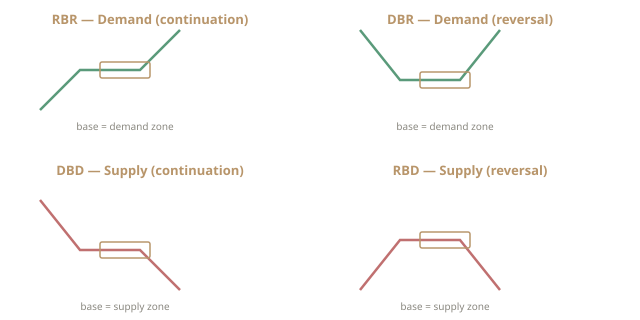
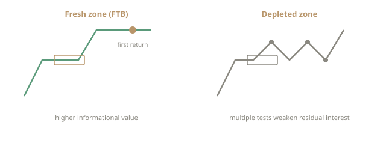
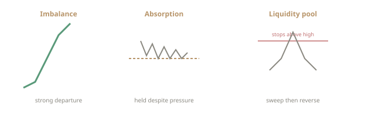
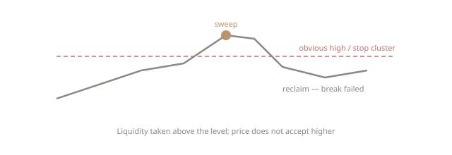
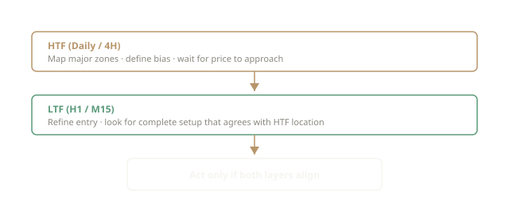
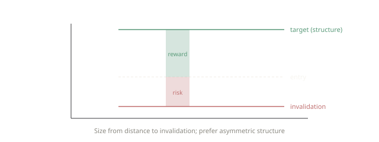
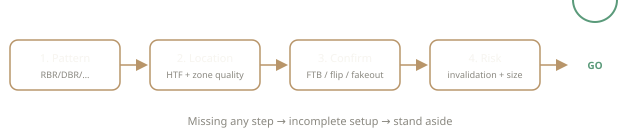

Research
Insights
Longer-form explanation of supply and demand, order flow, and risk — written for readers who want depth beyond definitions.
These notes are educational. They are not trade signals and do not guarantee outcomes. Pair them with the structured sequence and diagrams on the Education page.
Why structure beats prediction
Most retail narratives are predictive: “the market will rally because of X.” Supply and demand education is descriptive first. It asks what the market has already done. Has there been a clear rally or drop? Did price pause in a base? Did the next leg expand with force? Where is that base relative to the larger swing?
Prediction is optional and fragile. Structure is observable. A complete setup is a hypothesis built from observables: pattern, location, confirmation, and defined invalidation. The hypothesis can still fail. The point is that failure is defined in advance.
Reading the four patterns like a map
When you open a chart, scan for the last clear expansion. Then look backward for the base that launched it. That base is your candidate zone.
- Up–pause–up → RBR demand (continuation)
- Down–pause–up → DBR demand (reversal)
- Down–pause–down → DBD supply (continuation)
- Up–pause–down → RBD supply (reversal)
Then ask location: lower third of a range (often better for demand)? Near a prior daily high after a long rally (often better for supply)? Floating mid-range with no HTF context (usually lower priority)? Finally, wait for behaviour on the return — first-time touch, failed break, rejection, or lower-time-frame structure that agrees. That is how “complete setup” becomes practical.

Fresh zones versus tired zones
A zone is a hypothesis about residual interest. Every retest can consume some of that interest. Prefer strong impulsive departure, limited prior revisits, and HTF alignment. A zone chopped through five times is not worthless by rule, but the original story is weaker. Attachment to an old line is a behavioural risk, not an edge.

Institutional order flow without the mythology
You will not see a bank’s order ticket on a retail chart. What you see is the effect of size interacting with liquidity:
- Violent departure from a base → imbalance is a working hypothesis
- Probe beyond a high, then reclaim → liquidity may have been taken without acceptance
- Price holds a level despite aggressive opposing pressure → absorption is a working hypothesis
Order-flow language helps when tied to observables. It harms when every dip becomes “smart money accumulation.” Institutions accumulate, distribute, and get stopped out. Use the concepts to read the auction, not to invent a rescue narrative for a losing position.

Fakeouts as liquidity events
Obvious highs and lows attract stops and breakout orders. Markets frequently trade through those levels just far enough to fill them, then reverse. A fakeout that returns into a quality zone can be part of confirmation: the break failed, and the zone is where reverse pressure showed. Not every wick is a fakeout — ask whether price accepted beyond the level or merely visited and failed.

Multi-time-frame discipline
A clean M5 pattern inside a hostile daily environment is a different risk profile from the same pattern agreeing with the daily zone. Robust process: map major supply and demand on HTF → define bias → use LTF only for timing once price reaches the HTF zone. Skipping the first step is how traders collect lower-time-frame wins that the larger trend erases.

Risk is part of the setup
If you cannot state where the idea is wrong, you do not have a complete setup. Invalidation should sit beyond the structure that defines the zone. Position size follows from distance to invalidation and maximum acceptable loss. Reward targets are often logical structural points (opposing zone, prior swing). Asymmetry is desirable; it is not always available. Passing on mediocre reward-to-risk is professionalism.

Process over adrenaline
The educational goal is a repeatable process: observe structure, classify pattern, check location, wait for confirmation, define risk, or stand aside. Adrenaline-driven entries after a long watch often violate at least one of those steps. A written checklist (even a short one) reduces that failure mode.

Back-testing and deliberate practice
Pattern recognition improves with deliberate review of historical charts under less emotional pressure. Replay sessions, annotated journals, and strict rules about what counts as a “complete” historical example build the eye faster than live improvisation. Back-testing does not guarantee future results; it builds literacy and exposes whether your rules are actually specific enough to follow.
Services and technology in context
WINEMI CAPITAL. presents three related layers for visitors:
- Education and mentorship — frameworks for structure, risk, and process
- Research perspective — how markets and macro context can be read without overclaiming
- Technology-assisted process — systematic rules and AI-assisted tools that support scanning and risk limits. Automation improves consistency of process; it does not create certainty
Client-facing tools, if any, are introduced with disclosures and suitability steps. Public web content stays educational.
Connecting the dots
Education teaches how to read. Insights reinforce why the reading rules exist. Firm-level approach (see Our Approach) concerns how research and process inform capital allocation — a different layer from individual chart study.
What to study next
On the Education page you will find the full sequence with all diagrams: trends, three moves, four patterns, zones, location, complete setup, confirmation, order flow, worked example, common mistakes, and glossary.
Also see Our Approach and Risk Disclosure.